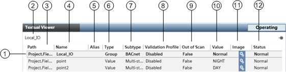

Textual Viewer Workspace

Textual Viewer Workspace | ||
| Name | Description |
1 | Object | Displays a list of objects in the system. A bolded object indicates a parent object with associated children objects. |
2 | Title bar | Displays the name of the object with the primary selection. If you select multiple objects, the name of the first object you selected will display. If you select a parent object, you implicitly select the children objects belonging to the parent as well. In this case, the parent object displays in the title bar. |
3 | Path | Displays the location of the object in the management platform. |
4 | Name | Displays the name of the object. |
5 | Alias | Displays a unique name within the system for an object. |
6 | Type | Displays the type of object selected such as Smoke Detector, Room, Graphic and so on. |
7 | Subtype | Displays the subtype of object selected such as Multi-state, Binary Input, and so on. |
8 | Validation Profile | Displays one of three scenarios for validation: Disabled, Enabled, or Supervised. |
9 | Out of Scan | Displays False, which means the communications driver is reading the object, or True, which means the communications driver is not reading the object. |
10 | Value | Displays the current value of the object. |
11 | Image | Displays an image associated with the status indicator. |
12 | Status | Displays the status of the object such as Normal, or the consolidated status of the object such as Alarm, Fault, or Technical Exclusion. |